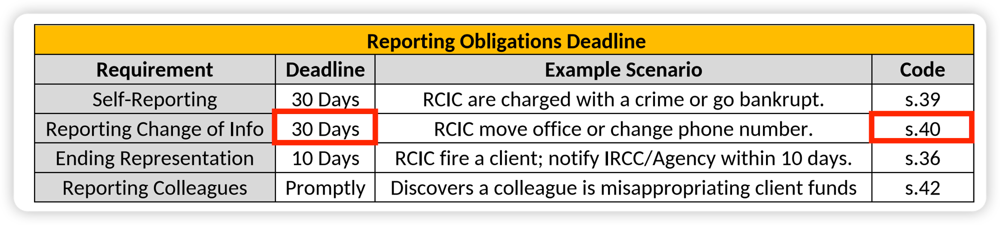
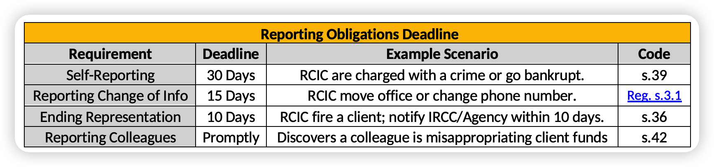

Updates of THE EPE CHEATSHEET — (Standard Edition)
Last updated: 2026-08-29
Table of Contents
Update #s1 — Serious Criminality sentence threshold: ≥6 months → >6 months
Original Content

Updated Content

Explanation
The term Serious Criminality is used in two distinct contexts in IRPA, and the sentence threshold is very subtly different in each:
| Serious Criminality — Threshold by Context | |||
|---|---|---|---|
| Context | Provision | Sentence threshold (in Canada) | Meaning |
| Inadmissibility | IRPA s. 36(1)(a) | > 6 months | A sentence of exactly 6 months does NOT trigger inadmissibility for serious criminality |
| Loss of IAD appeal right | IRPA s. 64(2) | ≥ 6 months | A sentence of exactly 6 months DOES strip the IAD appeal right |
The key takeaway: A sentence of exactly 6 months sits in the gap — the person is not inadmissible for serious criminality under IRPA s. 36(1)(a), but if they are inadmissible through the other limb (max ≥ 10 years), they also lose their IAD appeal right under IRPA s. 64(2).
| Serious Criminality — Scenario Examples | |||
|---|---|---|---|
| Max penalty | Actual sentence | Inadmissible for Serious Criminality? (IRPA s. 36(1)(a)) | Has IAD Appeal Right? (IRPA s. 64(2)) |
| ≥ 10 yrs | < 6 months (e.g. 3 months) |
✅ Yes (max ≥10 yrs limb) | ✅ Yes (s.64 not triggered) |
| = 6 months exactly | ✅ Yes (max ≥10 yrs limb) | ❌ No (≥6 months, s.64 strips appeal) | |
| > 6 months (e.g. 7 months) |
✅ Yes (both limbs) | ❌ No (≥6 months, s.64 strips appeal) | |
| < 10 yrs | < 6 months (e.g. 3 months) |
❌ No (neither limb met) | N/A (s.64 not engaged) |
| = 6 months exactly | ❌ No (neither limb met) | N/A (s.64 not engaged) | |
| > 6 months (e.g. 7 months) |
✅ Yes (>6 months limb) | ❌ No (≥6 months, s.64 strips appeal) | |
Update #s2 — Reporting Change of Info: 30 Days / s.40 → 15 Days / Reg. s.3.1
Original Content

Updated Content

Explanation
The Reporting Change of Info row in the Reporting Obligations Deadline table has two places that need to be updated:
| Reporting Change of Info — Corrections | ||
|---|---|---|
| Field | Was | Now |
| Deadline | 30 Days | 15 calendar days |
| Code | s.40 (Code of Professional Conduct — "Response to College") | Reg. s.3.1 (Changes in Information Regulation 2021-001) |
The correct authority is Changes in Information Regulation 2021-001, s.3.1, which states: "Every RCIC shall, within fifteen (15) calendar days of an effective change, notify the Council in writing of any changes" to their address, phone number, email, client account details, and more.
Update #s3 — Abuse of Discretion: 3 sub-bullets missing after "such as:"
What Was Missing
In the Abuse of Discretion flashcard, the last bullet reads "…falls outside the 'range of possible, acceptable outcomes', such as:" — but the three sub-bullets that follow were missing from the printed version.
Correct Content
| Abuse of Discretion |
|---|
|